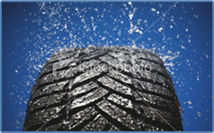
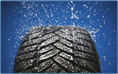
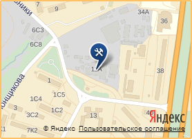

О нашем авто-сервисе
Основными направлениями деятельности автомастерской «Генстар» являются ремонт стартеров и генераторов, компрессоров кондиционера, рулевых реек, турбин и прочих комплектующих автомобилей. Обратившись за помощью к нам однажды, вы обязательно оцените уровень обслуживания и качество предоставляемых услуг.
Высококвалифицированный персонал, профессиональное ремонтно-диагностическое оборудование, возможность приобретения запасных частей и расходных материалов, необходимых для ремонта. В автосервисе используются лицензированные диагностические программы, которые помогут точно определить и устранить причину неисправности вашего автомобиля в кратчайшие сроки. Обращаясь к нам, Вы делаете выбор в пользу отличного и качественного сервиса, экономии Ваших финансов и времени.
Мы уверены в том, что грамотная диагностика перед проведением ремонта иномарки является залогом эффективности. Обратившись в автосервис на Войковской (САО), Вы получите самую полную консультацию у высококвалифицированных специалистов по любому интересующему Вас вопросу, связанному с ремонтом Вашего авто. Помимо ремонта авто, мы осуществляем полное техническое обслуживание...
Высококвалифицированный персонал, профессиональное ремонтно-диагностическое оборудование, возможность приобретения запасных частей и расходных материалов, необходимых для ремонта. В автосервисе используются лицензированные диагностические программы, которые помогут точно определить и устранить причину неисправности вашего автомобиля в кратчайшие сроки. Обращаясь к нам, Вы делаете выбор в пользу отличного и качественного сервиса, экономии Ваших финансов и времени.
Мы уверены в том, что грамотная диагностика перед проведением ремонта иномарки является залогом эффективности. Обратившись в автосервис на Войковской (САО), Вы получите самую полную консультацию у высококвалифицированных специалистов по любому интересующему Вас вопросу, связанному с ремонтом Вашего авто. Помимо ремонта авто, мы осуществляем полное техническое обслуживание...
Где мы находимся

Санкт-Петербург, ул. Салова, 57, корп.5
Телефон: +7 (499) 612-3252
E-mail: leshaservice@gmail.com
Время работы 10:00 - 21:00
Телефон: +7 (499) 612-3252
E-mail: leshaservice@gmail.com
Время работы 10:00 - 21:00